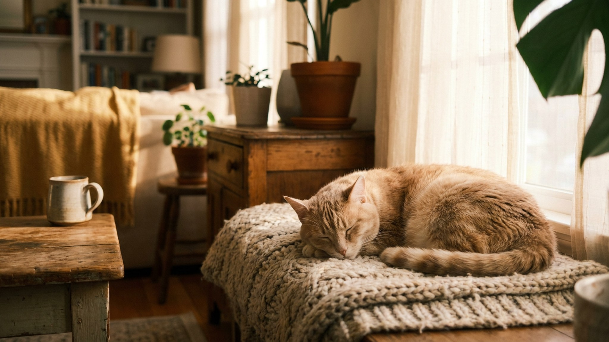

Открываете банку шпрот — кошка уже тут как тут. Из этого легко сделать вывод: рыба и есть идеальная кошачья еда. На самом деле это один из самых живучих мифов о питании кошек, и он обходится дорого. Разберём, откуда взялся стереотип, чем плох однообразный рыбный рацион и как давать рыбу так, чтобы она была лакомством, а не проблемой.
🐾 Экономьте на лишних визитах к врачу
Сначала спросите AI-ветеринара в AnimaLife — часто этого достаточно, чтобы понять, нужен ли визит к врачу.
Дикие предки домашних кошек жили в степях и пустынях Ближнего Востока — там рыба не водилась. Основа их рациона — мелкие грызуны и птицы. Рыбой кошки стали лакомиться рядом с человеческими рыбацкими деревнями, когда им перепадали отходы промысла. Это не природная привязанность, а случайная привычка.
Миф укрепила реклама советских и постсоветских кошачьих консервов с рыбой на этикетке, а потом — наблюдение: кошка реагирует на запах рыбы острее, чем на мясо. Но «охотно ест» не значит «полезно в основе рациона».
Если рыба занимает большую часть меню кошки, со временем стоит обратить внимание на несколько рисков:
Рыба — хорошее лакомство, а не основа рациона. Безопасная доля — не более 10% от общего объёма питания, 1–2 раза в неделю максимум. Что учесть при выборе:
Сырая морская рыба несёт риск паразитов. Если хотите дать сырую — предварительно заморозьте рыбу на 3–5 суток при температуре ниже −18 °C: это снижает риск. Пресноводную рыбу в сыром виде лучше не давать вообще — именно из-за тиамин-разрушающего фермента.
Варёная или запечённая без соли и специй — оптимальный вариант для кормления. Термообработка убирает большинство рисков. Никаких пряностей, маринадов, лука или чеснока в составе.
Кости: мелкие рыбные кости опасны — могут травмировать пищевод. Давайте только полностью очищенное филе или варёные крупные кости, которые легко разминаются пальцами. Сырые крупные кости не давайте.
🐾 Всё о вашем питомце — в одном приложении
AI-ветеринар, дневник, напоминания о прививках и уходе. Установите AnimaLife — это бесплатно, в Telegram и MAX.
🐾 Понравился разбор?
Подпишитесь на канал — каждый день разбираем по одному тревожному симптому у кошек и собак: что в пределах нормы, а когда пора к врачу. Подпишитесь, чтобы не пропустить разбор, который может спасти здоровье вашего питомца.
Материал носит информационный характер и не заменяет очную консультацию ветеринара.